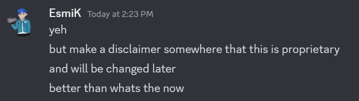

The place where GD changes.
We provide a lot of Geometry Dash information, so make sure to check some of our websites out!
The GD Timeline aims to document the entire history of Geometry Dash, along with a large selection of articles regarding these events. The events on the Timeline are written by multiple authors, and it can be one of you as well!
GD Assets is a little project that has all of the Geometry Dash assets, but neatly organised and upscaled. For now the project is about 60% done, the website is fully finished - but some of the files still need orgaisation, animating and upscaling.
GDHub is a community project, so if you want to contribute to any of our websites, here's our Discord Server: Link. And here's our GitHub: Link.
By the way, if you own a GD website, we can collaborate too :) Just visit our Discord server and DM esmik (the owner of GDHub).
We are not associated with RobTopGames AB ®